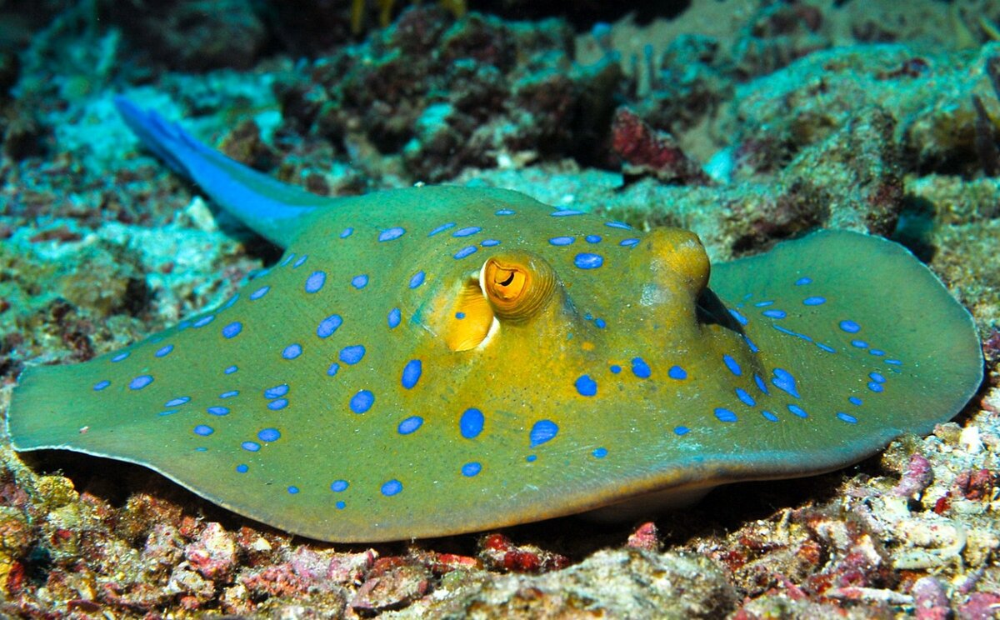
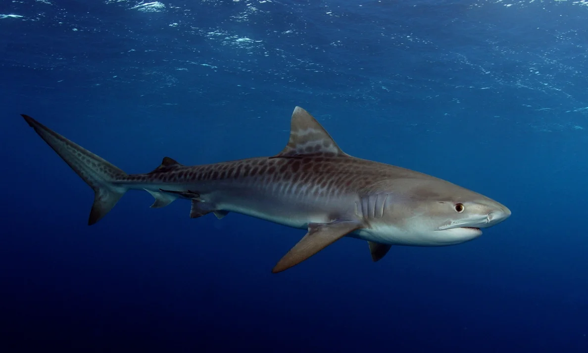
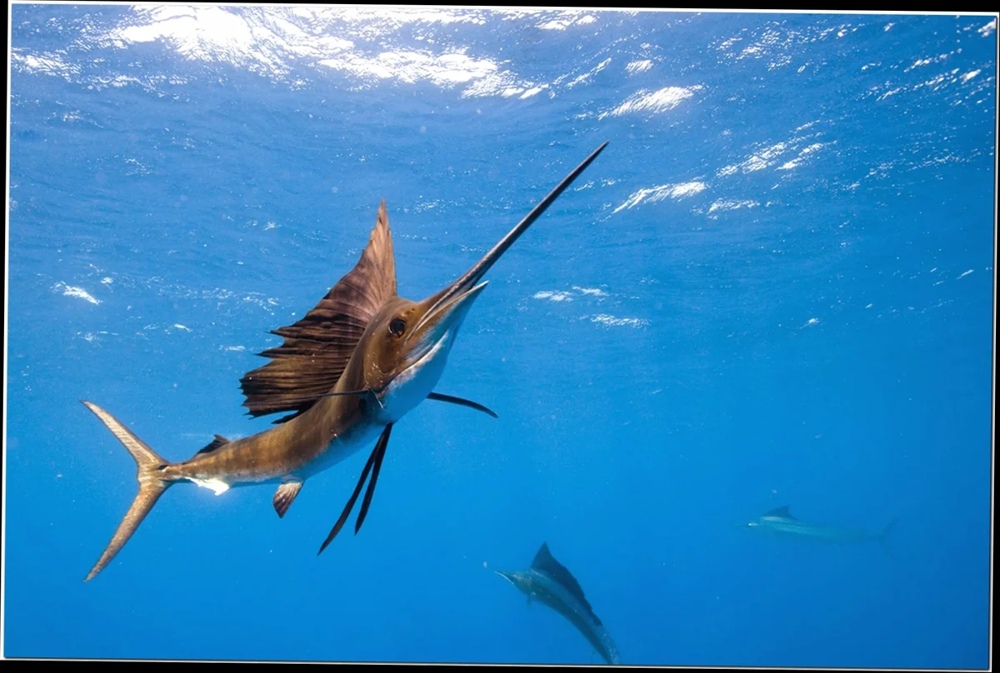

Скаты (лат. Batomorphi) — один из двух надотрядов пластиножаберных хрящевых рыб. Содержит пять отрядов и пятнадцать семейств. Для скатов характерно сильно уплощённое тело и большие грудные плавники, сросшиеся с головой. Пасть, ноздри и пять пар жабр находятся на плоской и, как правило, светлой нижней стороне. Хвост бичеобразной формы. Большинство скатов живёт в морской воде, однако существует и несколько пресноводных видов (моторо и другие). Верхняя сторона у скатов приспособлена по расцветке к тому или иному жизненному пространству и может варьировать от светло-песочной до чёрной. На верхней стороне расположены глаза и отверстия, в которые проникает вода для дыхания — брызгальца (первая пара жаберных щелей).
Скаты обитают во всех морях и океанах и живут как в холодных водах Арктики и Антарктики, так и в тропиках, диапазон температур среды обитания у них колеблется от 1,5 до 30 °С. Эти рыбы встречаются как на мелководье, так и на глубине до 2700 м. Большинство видов скатов ведёт придонный образ жизни и питается моллюсками, раками и иглокожими. Пелагические виды питаются планктоном и мелкой рыбой.
Размеры скатов колеблются от нескольких сантиметров до 6—7 м в длину. Одним из наиболее известных видов скатов является манта (Manta birostris). Больших размеров достигают скаты из семейства орляковых, чей размах плавников может достигать 2,5 метра, а длина — до пяти метров; а также скаты из семейства хвостоколовых, достигающие 2,1 метра в ширину и до 5,5 метров в длину. Сравнительно крупный скат-хвостокол морской кот встречается в Чёрном и Азовском морях.
 скатАку́лы (лат. Selachii) — надотряд хрящевых рыб (Chondrichthyes), относящийся к подклассу пластиножаберных (Elasmobranchii) и обладающий следующими отличительными особенностями: удлинённое тело более или менее торпедообразной формы, большой гетероцеркальный хвостовой плавник, обычно много острых зубов на каждой челюсти.
Русское слово «аку́ла» происходит от древнеисландского «hákall». Самые древние представители существовали уже около 450—420 млн лет назад.
Известно более 526 видов акул: от глубоководной мелкой Etmopterus perryi, длиной лишь 17 сантиметров, до китовой акулы (Rhincodon typus) — самой большой рыбы (её длина достигает 20 метров). Представители надотряда широко распространены в морях и океанах, от поверхности до глубины более 2000 метров. В основном обитают в морской воде, но некоторые виды способны жить также и в пресной. Большинство акул относятся к так называемым настоящим хищникам, но 3 вида — китовая, гигантская и большеротая акулы — фильтраторы, они питаются планктоном, кальмарами и мелкими рыбами.
 акулаМеч-рыба, или меченос(лат. Xiphias gladius), — вид лучепёрых рыб из отряда скумбриеобразных, единственный представитель семейства мечерылых, или меч-рыб, или ксифиевых[(Xiphiidae). Крупные рыбы, длина тела которых достигает 4,55 м Перейти к разделу «#Описание». Могут поддерживать температуру мозга и глаз выше температуры окружающей среды за счёт эндотермииПерейти к разделу «#Терморегуляция». Активные хищники с широким спектром питанияПерейти к разделу «#Питание». Распространёны в Тихом, Атлантическом и Индийском океанахПерейти к разделу «#Ареал». Совершают протяжённые миграции. Ценная промысловая рыба. Мировые уловы превышают 100 тысяч тонн. Популярный объект спортивной рыбалкиПерейти к разделу «#Взаимодействие с человеком».
Тело мощное, вытянутое, в поперечном сечении цилиндрическое, сужается к хвостовому стеблю. Так называемый «меч» (или «копьё»), представляющий собой сильно удлинённую верхнюю челюсть, образован предчелюстными и носовыми костями, уплощён в дорсовентральном направлении. Рот нижний, не выдвижной; зубы на челюстях отсутствуют. Глаза большие. Жаберные перепонки не прикреплены к межжаберному промежутку. Жаберные тычинки отсутствуют. Жабры на каждой жаберной дуге представляют собой видоизменённые пластинки, соединённые в одну сетчатую пластинку. Плавательный пузырь имеется
 рыба меч